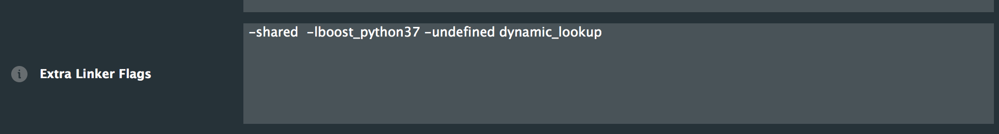
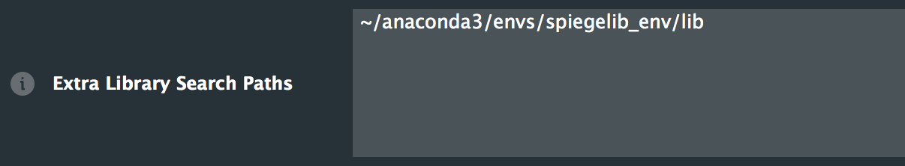
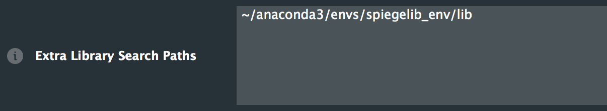
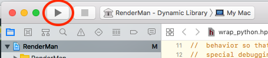

Contribution Guide¶
General¶
Contributions to spiegel are welcome and encouraged. See the following instructions to get setup for development.
Installation¶
It is recommended to develop inside of an anaconda
virtual environment. These instructions are for setting up for development within a
conda env, see installation instructions for anaconda,
download and install the python 3 version.
Clone the repo:
$ git clone https://github.com/jorshi/spiegel
Create a new
condafrom environment file:$ cd spiegel $ conda env create -f spiegel-env.yml . . . # # To activate this environment, use # # $ conda activate spiegel-env # # To deactivate an active environment, use # # $ conda deactivate
Activate the
condaenv:$ conda activate spiegel-env
Add spiegel in development mode to
condaenvironment:$ pip install -e .
Install librenderman (Mac OSX only currently)
librenderman is a python library for programmatically interacting with VST synthesizers. It uses boost-python to wrap a JUCE application. Getting it running inside of a
condaenv is not the most straightforward thing and hopefully we can work to get it packaged in anaconda at some point. But, for now:If you haven’t already, move out of the spiegel project directory to somewhere you would like to download librenderman
Clone the librenderman repo:
$ git clone https://github.com/fedden/RenderMan.git
Open the RenderMan python3 jucer file in ProJucer:
$ cd RenderMan $ open RenderMan-py36.jucer
Update Xcode exporter
For the Xcode (MacOSX) exporter modify the Extra Linker Flags: remove
-lpython3.6mChange-lboost-pythonto-lboost-python37and add-undefined dynamic_lookupUpdate Xcode Debug export
A sub category of the Xcode (MacOSX) exporter is the Debug specific options. Here we want to change the header and library search paths to look for headers and libs in ourcondaenv. The exact location will depend on where yourcondaenvironments are on your system, which was determined when you installed anaconda. The default location on MacOSX is/Users/<your-username>/anaconda3.The following instructions will refer to that location, whatever it is on your system, as<path-to-anaconda3>.For the Header Search Paths, remove the existing paths and add<path-to-anaconda3>/envs/spiegel-env/includeand<path-to-anaconda3>/envs/spiegel-env/include/python3.7m.Using the default anaconda path: For the Extra Library Search Paths, remove the existing paths and add
For the Extra Library Search Paths, remove the existing paths and add<path-to-anaconda3>/envs/spiegel-env/libUsing the default anaconda path:Open Xcode and build
Open Xcode from the Projucer by clicking on the Xcode icon

Build the library in Xcode
Celebrate successful build!
Rename the built library and move to conda env:
$ cd <path-to-RenderMan>/Builds/MacOSX/build/Debug $ mv librenderman.so.dylib librenderman.so $ mv librenderman.so <path-to-anaconda3>/envs/spiegel-env/lib/python3.7/site-packages/
Test librenderman. Make sure the
condaspiegel-env is activated before running python:$ python >>> import librenderman as rm JUCE v<Juce version> >>> engine = rm.RenderEngine(44100, 512, 512) >>>
If you made it this far without errors, then you should be good to go!